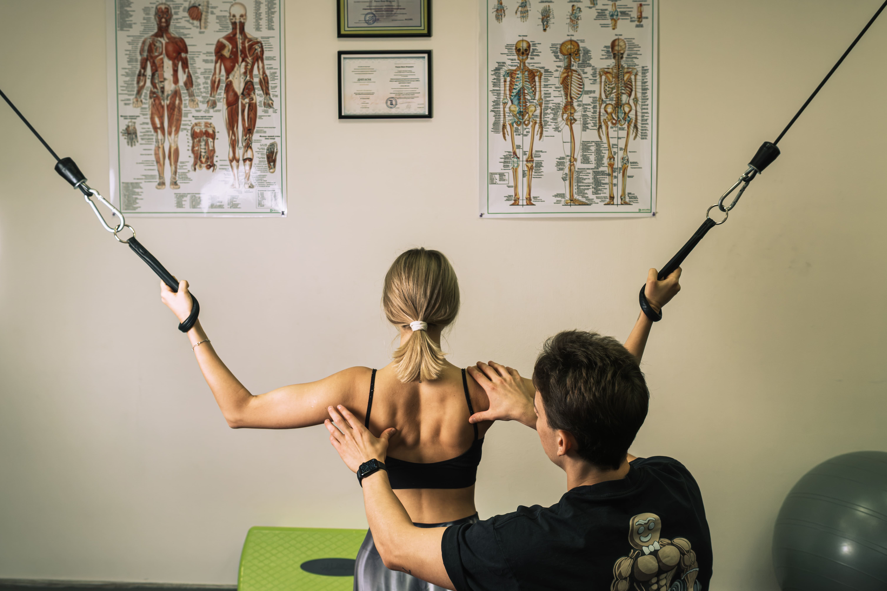

Индивидуальные занятия ЛФК под контролем тренера в Санкт-Петербурге

Индивидуальные занятия лечебной физкультурой — это персональные тренировки, где всё внимание тренера направлено только на вас. В нашем центре на Петроградской стороне каждое занятие ЛФК проводится под постоянным контролем квалифицированного инструктора с медицинским образованием. Мы не работаем по шаблонам: программа составляется индивидуально, с учётом вашего диагноза, физической формы и целей.
Персональный тренер по ЛФК следит за техникой выполнения каждого упражнения, корректирует положение тела, контролирует дыхание и самочувствие. Такой подход позволяет избежать ошибок, которые могут навредить при самостоятельных тренировках, и добиться результата быстрее.
Кому подходят индивидуальные тренировки ЛФК
- При болях в спине, шее и пояснице (грыжи, протрузии, остеохондроз)
- При нарушениях осанки и сколиозе у взрослых и детей
- В период реабилитации после травм, операций, переломов
- При артрозах и артритах коленного, тазобедренного, плечевого суставов
- Для восстановления после пластики ПКС и травм связок
- При плоскостопии, вальгусе и других проблемах стопы
- Для общего укрепления и здорового фитнеса без осевой нагрузки на позвоночник
Как проходит индивидуальное занятие
Первый визит включает осмотр, функциональную диагностику и тестовое занятие. Кинезиоспециалист оценивает состояние опорно-двигательного аппарата, выявляет ограничения подвижности и мышечные дисбалансы. На основе диагностики составляется персональная программа тренировок.
Каждое занятие длится 50 минут. Тренер подбирает упражнения с учётом текущего состояния, прогресса и самочувствия. Нагрузка увеличивается постепенно — без боли и перенапряжения. В зале одновременно занимаются не более двух человек, что обеспечивает комфортную и спокойную атмосферу.
Наши специалисты
Занятия проводят дипломированные инструкторы ЛФК и реабилитации с опытом более 10 лет. Наши специалисты имеют высшее медицинское образование — Первый мед и Университет имени Лесгафта. Работают с кинезиологическим подходом: не просто дают упражнения, а выстраивают движение, учитывая биомеханику тела.
Стоимость индивидуальных занятий ЛФК
- Первичная консультация (50 мин) — 3 000 ₽
- Индивидуальное занятие (50 мин) — 3 000 ₽
- Занятие для двоих (50 мин) — 4 000 ₽
- Абонемент (50 мин) — 2 500 ₽ за занятие
Студия находится по адресу Большая Посадская, 16 — Петроградская сторона, Санкт-Петербург. Ближайшее метро — Горьковская / Петроградская.
Записаться на занятие →